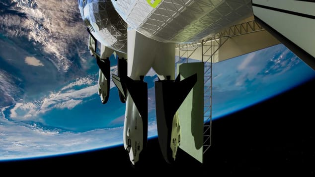

Francesca Street, CNN • Updated 16th September 2019

(CNN) — It's 50 years since man first stepped on the moon,
and we're still harboring dreams of escaping life on Earth for the mysteries of space.
If a career as an astronaut isn't for you
, perhaps the promise of a sojourn in a space hotel might be appealing.
Californian company The Gateway Foundation has released plans for the Von Braun Station
, a cruise ship-style hotel floating among the stars.
The aim is to get the hotel off the ground by 2025 and make it fully operational for travel by 2027.
The Von Braun station is just one such space-based tourism option in development.
Also planning to propel people into space are Virgin Galactic
, Elon Musk's SpaceX company and Amazon CEO Jeff Bezos' Blue Origin aerospace company,
not to mention the International Space Station
-- which recently announced the possibility of commercial collaborations.
The Von Braun Station is also not the only space hotel design in the works.
Earlier in 2019, US-based space tech startup Orion Span released plans for a luxury space hotel called Aurora Station
, which it hopes to launch in 2022.
According to digitally rendered video and images released by the Gateway Foundation
, the station resembles a rotating wheel, comprised of 24 modules, orbiting the Earth.
But how would the physics of the hotel work?
Tim Alatorre, senior design architect at the Gateway Foundation
, says the rotating wheel would create a simulated gravity.
"The station rotates, pushing the contents of the station out to the perimeter of the station
, much in the way that you can spin a bucket of water
-- the water pushes out into the bucket and stays in place," he tells CNN Travel.
Near the center of the station there's no artificial gravity, Alatorre says
, but as you move down the outside of the station, the feeling of gravity increases.